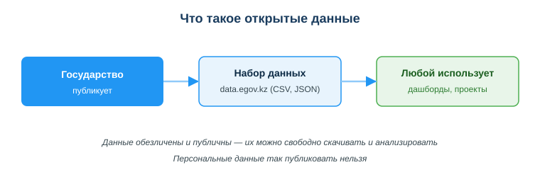
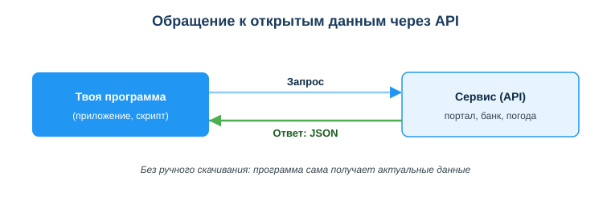

Дисциплина: Применение информационно-коммуникационных и цифровых технологий
Результат обучения: РО 2.2 — использование услуг веб-порталов и цифровых сервисов · Объём темы: 2 часа
Квалификация: 4S06130103 «Разработчик программного обеспечения»
Представь типичную ситуацию. Ты делаешь учебный проект — дашборд «Население городов Казахстана по годам». Дедлайн близко, и проще всего «прикинуть» цифры: написать, что в Алматы живёт «примерно два миллиона», в Шымкенте «около миллиона», и нарисовать красивые столбики. Дашборд выглядит солидно. Но на защите преподаватель задаёт один вопрос: «Откуда числа?» И всё рассыпается — потому что числа выдуманы, выводы недостоверны, а проект, построенный на фантазии, всерьёз не принимают.
А ведь рядом лежит другой путь. Государство само собрало эту статистику, проверило её и бесплатно выложило в открытый доступ — заходи и бери. Это и есть открытые данные. Зайдя на портал data.egov.kz, ты за пять минут находишь настоящий набор по населению, скачиваешь его и строишь дашборд на проверенных числах. Теперь на вопрос «откуда?» у тебя есть ответ со ссылкой на официальный источник.
Вторая половина темы — про то, что делать, когда данные меняются постоянно. Курс валют, прогноз погоды, расписание транспорта — скачивать такой файл вручную каждый час бессмысленно. Для этого существует API: твоя программа сама отправляет запрос сервису и получает свежий ответ, обычно в формате JSON. Так работают почти все приложения, которыми ты пользуешься: погодный виджет на телефоне, конвертер валют, лента новостей — все они под капотом дёргают чужой API и показывают тебе результат.
Эта тема — фундамент работы с данными, а данные сегодня есть в любом проекте. Дашборд, прототип, учебный анализ, обучение модели машинного обучения — всё начинается с вопроса «где взять настоящие данные?». Разработчик, который умеет находить открытые наборы и понимает, как устроен обмен через API, не тратит время на выдумывание и не выглядит несерьёзно. Этот навык напрямую относится к РО 2.2 — умению находить, оценивать и использовать информацию из цифровых источников [1; 8].
После изучения темы ты сможешь:
Начнём с главного понятия темы.
Разберём это определение по частям, потому что в каждом слове скрыт смысл.
«Свободно и бесплатно». Тебе не нужно ни у кого спрашивать разрешения, платить или регистрироваться, чтобы скачать набор. Открытые данные публикуются именно для того, чтобы их брали и использовали — в проектах, исследованиях, приложениях, журналистике. Это противоположность закрытым данным, доступ к которым ограничен.
«Повторное использование». Ключевая идея открытых данных в том, что одни и те же данные могут пригодиться многим разным людям для разных задач. Государство собрало статистику по школам один раз — а использовать её могут и студент для дашборда, и журналист для статьи, и стартап для сервиса поиска школ. Данные собираются один раз, а работают на всех. По-английски это называют принципом «collect once, use many times».
«Обезличены». Это самое важное для понимания границы. Открытые данные — это всегда агрегированные (обобщённые) или обезличенные сведения: «в городе N столько-то жителей», «в области M столько-то школ». По таким данным невозможно сказать, кто конкретно живёт в городе N. А вот список с ФИО, ИИН и телефонами реальных людей открытыми данными быть не может — это персональные данные, и их публикация запрещена законом [3]. Запомни простое правило: открытые данные отвечают на вопрос «сколько / какой в среднем», но никогда — «кто именно».
Посмотри на схему «Что такое открытые данные» (приложение А). Она показывает всю логику в трёх блоках. Слева — государство, которое публикует данные. В центре — набор данных на портале data.egov.kz в форматах XLSX, JSON или XML. Справа — любой пользователь, который берёт набор и строит на нём дашборды и проекты. Стрелки идут слева направо: данные движутся от того, кто их собрал, к тому, кто их применяет. А внизу схемы — главное ограничение: данные обезличены и публичны, поэтому их можно свободно скачивать, но персональные данные так публиковать нельзя.

Зачем это нужно государству. У открытых данных есть и общественный смысл. Когда государство открывает статистику, оно становится прозрачнее: любой может проверить цифры, построить на них сервисы, найти проблемы. Это часть политики цифрового государства и государственной программы цифровизации, которую в Казахстане поддерживает Закон РК «Об информатизации» № 418-V [2].
Зачем это нужно лично тебе как разработчику. Очень просто: тебе постоянно нужны настоящие данные. Без них не построить честный дашборд, не сделать реалистичный прототип, не обучить модель. Выдумывать данные — значит делать недостоверный продукт. Открытые данные дают тебе реальную фактуру легально и бесплатно. Это твой первый и самый доступный источник данных в любом проекте.
Главный портал открытых данных Казахстана — data.egov.kz. Это часть инфраструктуры электронного правительства (eGov). Здесь государственные органы публикуют тысячи наборов данных: статистику по регионам, справочники, экономические и социальные показатели.
Что там можно найти. Тематика широкая, и почти под любой учебный проект найдётся набор:
Эти направления неслучайны — именно по ним построены варианты задания к этому занятию (В1–В6). Так что, выбирая тему для дашборда, ты сразу попадаешь в реальный раздел портала.
Как устроен поиск набора — пошаговый алгоритм. Чтобы не блуждать по сайту, действуй по шагам:
Что обязательно зафиксировать. Когда берёшь набор для проекта, сразу выпиши его «паспорт»: точное название, формат, период данных и прямую ссылку. Это нужно по двум причинам. Во-первых, на защите ты должен показать источник — это и есть доказательство, что данные настоящие. Во-вторых, без этого ты потом сам не найдёшь, откуда взял цифры. В задании к занятию указание реквизитов и ссылки прямо оценивается баллами — это не формальность, а профессиональная привычка ссылаться на источник.
Оценка достоверности. Даже на официальном портале не отключай голову. Смотри на дату обновления (не устарели ли данные), на полноту (нет ли пустых лет и пропусков), на то, какой орган опубликовал набор. Этот навык — критическая оценка цифровых источников — относится к РО 2.2 и подробно разбирается в занятии 11; здесь ты применяешь его на практике [8].
Сам портал data.egov.kz отдаёт наборы в форматах XLSX, JSON и XML. Но в работе с данными вообще ты встретишь и другие форматы, поэтому разберём три самых распространённых — CSV, JSON и XLSX. Их нужно различать, потому что от формата зависит, удобно ли с данными работать в коде или только смотреть глазами.
| Формат | Что это | Для кого удобен |
|---|---|---|
| CSV | таблица, где значения в строке разделены запятыми | для кода и для Excel — универсальный |
| JSON | структура из пар «ключ–значение» | для API и программ |
| XLSX | файл таблицы Excel со стилями и формулами | для людей, для просмотра |
Разберём каждый подробнее, с примерами.
CSV (Comma-Separated Values — «значения, разделённые запятыми»). Это самый простой табличный формат. Обычный текстовый файл, где первая строка — заголовки колонок, а каждая следующая строка — одна запись, и значения внутри строки разделены запятыми (в русской локали иногда точкой с запятой). Вот как выглядит набор «население городов» в CSV:
city,year,population
Алматы,2020,1916779
Алматы,2021,1977011
Шымкент,2020,1038155
Шымкент,2021,1074880Чем хорош CSV: его понимает почти всё — Excel, Google Таблицы, Python, любой язык. Файл маленький, читается и человеком, и программой. Именно поэтому CSV — рабочая лошадка анализа данных. Чем плох: он плоский, в нём нельзя удобно записать вложенные структуры (таблица в таблице).
JSON (JavaScript Object Notation). Это текстовый формат записи данных в виде пар «ключ–значение». Он умеет описывать не только плоские таблицы, но и вложенные структуры, поэтому стал стандартом обмена данными между программами и основным форматом ответов API. Те же данные о населении в JSON:
[
{ "city": "Алматы", "year": 2020, "population": 1916779 },
{ "city": "Алматы", "year": 2021, "population": 1977011 },
{ "city": "Шымкент", "year": 2020, "population": 1038155 }
]Читается так: квадратные скобки [ ] — это список (массив) записей; фигурные скобки { } — одна запись (объект); внутри неё пары "ключ": значение. То есть «город — Алматы, год — 2020, население — 1916779». Программе такую структуру разобрать очень легко: она обращается к значению по имени ключа (record["population"]), а не считает запятые. Подробное описание формата с примерами есть в документации MDN [5]. JSON ты будешь встречать постоянно — как только начнёшь работать с API.
XLSX (формат Microsoft Excel). Это «родной» формат Excel: таблица со стилями, цветами, объединёнными ячейками, несколькими листами и формулами. Он отлично подходит, чтобы человек открыл файл и посмотрел данные глазами. Но для кода он неудобен: внутри это сложный архив, а оформление мешает автоматической обработке. Поэтому если планируешь обрабатывать данные программой, лучше брать CSV; если данные нужны только для просмотра и ручной работы — подойдёт XLSX.
Простое правило выбора. Запомни так: CSV и JSON — для кода и автоматической обработки; XLSX — для глаз человека. А между CSV и JSON выбор такой: CSV — когда данные плоские, как таблица; JSON — когда есть вложенность или когда данные приходят из API.
Скачать файл вручную — это хорошо, когда данные меняются редко. Но что если они меняются каждую минуту? Курс валют, погода, цена акции, число свободных мест — скачивать файл заново вручную невозможно. Здесь и нужен API.
Понять API проще всего через аналогию с рестораном. Ты (твоя программа) сидишь за столом и хочешь блюдо (данные). Ты не идёшь сам на кухню (в чужую базу данных) — это не твоя зона и тебя туда не пустят. Вместо этого ты делаешь заказ официанту (API). Официант передаёт заказ на кухню, забирает готовое блюдо и приносит тебе. Тебе не нужно знать, как устроена кухня — нужно лишь знать, что можно заказать и как. API — это официант между твоей программой и чужими данными. Он скрывает внутреннюю кухню и даёт удобный способ получить результат.
Зачем это разработчику:
Почти всё, чем ты пользуешься, работает через API. Когда погодный виджет показывает температуру — он запросил её у API метеосервиса. Когда приложение банка показывает курс доллара — оно дёрнуло API. Когда сайт встраивает карту — он обращается к API карт. Умение работать с API — базовый навык интеграций, и именно с него начинаются темы автоматизации дальше в курсе (занятия 34–35) [4; 6].
Теперь разберём сам обмен пошагово. Посмотри на схему «Обращение к открытым данным через API» (приложение Б): слева — твоя программа, справа — сервис (API), между ними две стрелки. Верхняя стрелка (синяя) — запрос от программы к сервису. Нижняя стрелка (зелёная) — ответ: JSON от сервиса обратно к программе. Внизу подпись: всё это происходит без ручного скачивания — программа сама получает актуальные данные.

Разложим цикл на шаги на примере «узнать курс доллара»:
Как выглядит ответ JSON на такой запрос — упрощённо:
{
"base": "USD",
"to": "KZT",
"rate": 478.52,
"date": "2026-06-26"
}Программе достаточно взять значение по ключу rate — и она знает курс. Никакого ручного скачивания, никакого копирования из таблицы: данные пришли структурированными, бери и используй.
Важная мысль о «запросе» и «ответе». Это и есть тот ответ, который ты должен уметь дать на экзамене и в задании: программа отправляет сервису запрос, сервис возвращает ответ с данными — обычно в формате JSON — и программа сразу использует свежие данные, без ручного скачивания файла. Запомни эту пару «запрос → ответ» как сердце работы любого API. Большинство таких API построены по стилю REST — это распространённый подход к организации запросов и ответов, который ты подробно изучишь в темах автоматизации [4; 6].
Где здесь открытые данные. Многие порталы открытых данных, включая data.egov.kz, дают доступ к наборам не только файлом, но и через API. То есть один и тот же набор можно либо скачать как CSV, либо запрашивать программно через API и получать JSON. Выбор зависит от задачи — об этом следующий подраздел.
Это практический вопрос, который встаёт в каждом проекте. Решение зависит от того, как часто меняются данные и нужна ли автоматика.
Скачай файл один раз, если:
Используй API, если:
Бытовой пример, чтобы запомнить. Список твоих одноклассников меняется раз в год — его проще держать файлом и обновлять вручную. А время прибытия автобуса меняется каждую минуту — его нет смысла «скачивать», его надо запрашивать через API в момент, когда ты смотришь на табло. Тот же принцип в коде: редкое и статичное — файлом, частое и живое — через API.
Это самый важный для ответственности подраздел темы. Открытые данные публичны — но это не значит, что публиковать можно что угодно. Есть жёсткая граница.
Открытые данные — обезличенные и агрегированные: «в Алматы 2 млн жителей», «в Туркестанской области 800 школ». По ним нельзя опознать человека. Их можно и нужно публиковать.
Персональные данные — сведения, по которым можно прямо или косвенно опознать конкретного человека: ФИО, ИИН, номер телефона, адрес, данные документов. Публиковать их как открытые нельзя. Это запрещает Закон РК «О персональных данных и их защите» от 21.05.2013 № 94-V [3], а сферу информатизации в целом регулирует Закон РК «Об информатизации» № 418-V [2].
Сравни на примере одной темы — «школы региона»:
| Можно публиковать как открытые данные | Нельзя — это персональные данные |
|---|---|
| число школ по областям | список учеников с ФИО и адресами |
| количество учеников всего | телефоны родителей |
| статистика по успеваемости по региону | оценки конкретного ребёнка с его именем |
Видишь принцип: как только данные становятся про конкретного человека, а не про общую массу, они превращаются в персональные — и публиковать их запрещено. Открытые данные всегда обобщены до уровня, где отдельный человек «растворяется» в статистике.
Что это значит для тебя на практике. Во-первых, бери из открытых источников только обезличенные данные — на data.egov.kz они такие и есть. Во-вторых, если ты сам работаешь с данными, в которых есть персональные сведения (например, в учебном задании или на работе), не публикуй их и не загружай в публичные сервисы — сначала обезличь: убери ФИО, ИИН, телефоны, замени имена на «Клиент 1», «Ученик 2». Этот навык обезличивания и принцип дата-минимизации ты уже встречал в теме 01 и продолжишь применять при работе с ИИ и данными дальше [3].
Пример 1 — выдуманные данные против настоящих. Студент строил дашборд «население городов» и вписал цифры «на глаз». Преподаватель попросил реальные данные.
Разбор: выдуманные числа делают любые выводы недостоверными — на их основе нельзя ничего утверждать. Правильный путь: зайти на data.egov.kz, найти набор по населению, скачать его (CSV) и перестроить дашборд на настоящих числах, указав ссылку на источник. Если бы данные обновлялись постоянно — стоило бы брать их через API. Это и есть разница между «проектом для вида» и серьёзной работой.
Пример 2 — выбор формата под задачу. Тебе нужно (а) быстро глянуть набор глазами и (б) обработать тот же набор программой на Python.
Разбор: для (а) удобнее XLSX или CSV — открыл и посмотрел; для (б) нужен формат, который легко читает код, — CSV или JSON. Один и тот же набор может быть нужен в разных форматах под разные шаги работы. Поэтому, выбирая формат при скачивании, сразу думай: это «для глаз» или «для кода».
Пример 3 — файл или API. Тебе нужно показывать в приложении актуальный курс валют.
Разбор: скачивать файл с курсом бессмысленно — он устареет через минуту. Здесь нужен API: программа делает запрос к сервису и получает ответ JSON с текущим курсом, обновляя его автоматически. А вот если бы тебе нужна была история курса за прошлый год для анализа — это статичные данные, и их разумнее один раз скачать файлом.
Пример 4 — граница приватности. Чиновник предлагает «для прозрачности» опубликовать как открытые данные список всех получателей пособия с ФИО и ИИН.
Разбор: это нарушение Закона РК № 94-V [3]. Список конкретных людей с идентификаторами — персональные данные, их публиковать нельзя. Открытыми могут быть только обезличенные показатели: «сколько человек получили пособие по области», «средний размер выплаты». Прозрачность достигается обобщёнными цифрами, а не раскрытием личностей.
Основная и дополнительная литература:
Нормативные источники РК:
Электронные ресурсы и документация:
Международные рамки:
assets/19_shema-otkrytye-dannye.svg. Читается слева направо: государство публикует → набор данных на data.egov.kz (CSV, JSON) → любой использует для дашбордов и проектов. Внизу — ключевое ограничение: данные обезличены и публичны, персональные данные так публиковать нельзя.assets/19_shema-api-zapros-otvet.svg. Слева твоя программа, справа сервис (API). Верхняя стрелка — запрос к сервису, нижняя — ответ в формате JSON. Обмен идёт без ручного скачивания: программа сама получает актуальные данные.Материал подготовлен на основе урока темы (urok.md) и приведённых в конце источников; он расширяет и углубляет содержание урока для самостоятельного изучения. Источники приведены главами и ссылками (без номеров страниц); нормативные акты — с реквизитами.
Материал разработан рабочей группой ТОО «Колледж Хекслет Казахстан» и одобрен к использованию в обучении решением Педагогического совета.